Linux 磁盘操作
Table of Content
[TOC]
磁盘分区模式
在Linux系统中，磁盘分区是管理存储设备的基础，MBR（Master Boot Record，主引导记录） 和 GPT（GUID Partition Table，全局唯一标识分区表） 是两种主流的磁盘分区模式，它们在分区原理、容量支持、安全性等方面存在显著差异，直接影响磁盘的使用范围和稳定性。
MBR分区模式（传统分区模式）
MBR是1983年随IBM PC DOS 2.0推出的传统分区标准，曾长期主导x86架构的磁盘分区，其核心是存储在磁盘第一个扇区（512字节） 中的引导记录信息，包含三部分关键内容：
- 引导程序（446字节）：负责在计算机启动时加载操作系统内核（如Linux的GRUB引导程序）；
- 分区表（64字节）：记录磁盘的分区信息，是MBR的核心；
- 结束标志（2字节）：固定为
0x55AA，用于标识MBR的有效性。
MBR的核心特性：
- 分区数量限制：由于分区表仅64字节，每个分区条目占16字节，因此最多支持4个主分区；若需创建更多分区，需将1个主分区设为“扩展分区”，再在扩展分区内创建“逻辑分区”（逻辑分区数量受文件系统限制，如Linux下通常不超过15个）。
- 磁盘容量限制：MBR基于32位地址记录扇区，单个磁盘最大支持2TB（计算逻辑：每个扇区512字节 × 2³²个扇区 = 2TB）；若磁盘超过2TB，超出部分无法被MBR识别和使用。
- 引导方式兼容性：仅支持BIOS（Basic Input/Output System） 引导模式，无法支持UEFI（Unified Extensible Firmware Interface，统一可扩展固件接口）引导。
- 安全性缺陷：MBR分区表仅存一份（位于磁盘第一个扇区），若该扇区因病毒、硬件故障损坏，整个磁盘的分区信息将丢失，且恢复难度较高。
- Linux下的应用场景：早期Linux服务器、旧款PC（仅支持BIOS）、容量≤2TB的磁盘（如传统机械硬盘、小容量SSD）。
GPT分区模式（现代分区模式）
GPT是 UEFI 规范的一部分，旨在解决MBR的容量和安全性限制，采用“全局唯一标识（GUID）”标识分区，其分区信息不再依赖单个扇区，而是通过多份备份和校验机制保障可靠性。
GPT的核心特性:
- 分区数量无限制（理论上）：GPT默认支持128个主分区（无需扩展分区/逻辑分区），且可通过修改分区表大小支持更多分区，完全满足多系统、多数据分区的需求（如Linux服务器分多个/data、/backup分区）。
- 超大容量支持：基于64位地址记录扇区，单个磁盘最大支持8EB（1EB=1024PB=1048576TB），可满足未来超大规模存储（如企业级100TB+ SSD）的需求。
- 引导方式兼容性：原生支持UEFI引导（现代计算机的主流引导模式），也可通过“BIOS兼容模式（CSM）”在部分BIOS设备上使用，但需磁盘支持。
- 高安全性：
- 分区表双重备份（主分区表+磁盘尾部的备份分区表）；
- GPT头和分区表均有CRC32校验值，可检测损坏并通过备份恢复；
- 分区类型通过GUID精确标识（如Linux根分区GUID为
0x8300，EFI系统分区为0xEF00），避免分区类型混淆。
- Linux下的应用场景：现代PC/服务器（支持UEFI）、容量＞2TB的磁盘（如大容量SSD、RAID阵列）、需要多分区的场景（如多系统共存、复杂存储规划）。
MBR与GPT的核心区别对比
| 对比维度 | MBR分区模式 | GPT分区模式 |
|---|---|---|
| 磁盘容量支持 | 最大2TB | 最大8EB（理论值） |
| 分区数量限制 | 最多4个主分区（或3主+1扩展+多个逻辑分区） | 默认128个主分区，可扩展 |
| 引导方式 | 仅支持BIOS引导 | 原生支持UEFI引导，部分支持BIOS兼容模式 |
| 分区表安全性 | 仅1份（位于第一个扇区），损坏后难恢复 | 主+备份双份，带CRC32校验，可恢复 |
| 分区标识方式 | 分区类型ID（1字节，如0x83代表Linux） | 分区类型GUID（16字节，精确唯一） |
| 工具兼容性 | 支持fdisk（Linux）、DiskPart（Windows）等传统工具 |
支持gdisk/parted（Linux）、DiskGenius（Windows）等现代工具 |
| 适用场景 | 旧设备（BIOS）、≤2TB磁盘 | 新设备（UEFI）、＞2TB磁盘、多分区需求 |
如何选择MBR还是GPT？
在Linux系统中，分区模式的选择主要取决于硬件支持和存储需求：
- 优先选GPT的情况：
- 计算机支持UEFI引导（现代设备默认）；
- 磁盘容量＞2TB；
- 需要创建超过4个分区（如多系统、多数据分区）；
- 对数据安全性要求高（如服务器存储关键数据）。
- 只能选MBR的情况：
- 计算机仅支持BIOS引导（如老旧服务器、早期PC）；
- 磁盘容量≤2TB，且无需多分区（如嵌入式Linux设备）；
- 必须兼容仅支持MBR的旧系统或工具。
物理设备命名规则
在Linux系统中一切都是文件，硬件设备也不例外。既然是文件，就必须有文件名称。系统内核中的 udev 设备管理器会自动把硬件名称规范起来，目的是让用户通过设备文件的名字可以猜出设备大致的属性以及分区信息等；这对于陌生的设备来说特别方便。另外，udev 设备管理器的服务会一直以守护进程的形式运行并侦听内核发出的信号来管理 /dev 目录下的设备文件。Linux 系统中常见的硬件设备及其文件名称如下：
| 硬件设备 | 文件名称 |
|---|---|
| IDE 设备（电子继承驱动器） | /dev/hd[a-d] |
| SCSI/SATA/U盘 | /dev/sd[a-z] |
| virtio 设备（IO 半虚拟化解决方案） | /dev/vd[a-z] |
| 打印机 | /dev/lp[0-15] |
| 鼠标 | /dev/mouse |
误区 1：/dev目录中sda设备之所以是a，并不是由插槽决定的，而是由系统内核的识别顺序来决定的。
误区 2：分区的数字编码
sda3不一定是强制顺延下来的，也有可能是手工指定的。
设备的文件名称：
首先，/dev/目录中保存的应当是硬件设备文件；其次，sd 表示的是存储设备；然后，a 表示系统中同类接口中第一个被识别到的设备；最后，5表示这个设备是一个逻辑分区。一言以蔽之，/dev/sda5表示的就是“这是系统中第一块被识别到的硬件设备中分区编号为 5 的逻辑分区的设备文件”。
文件系统
Linux 系统支持多种文件系统，常见如下：
- Ext4：它支持的存储容量高达 1EB（1EB=1,073,741,824GB），且能够有无限多的子目录。另外，Ext4 文件系统能够批量分配 block（块），从而极大地提高了读写效率。现在很多主流服务器也会使用 Ext4 文件系统。
- XFS：是一种高性能的日志文件系统，而且是RHEL 7/8中默认的文件管理系统。它的优势在发生意外宕机后尤其明显，即可以快速地恢复可能被破坏的文件，而且强大的日志功能只需花费极低的计算和存储性能。它支持的最大存储容量为18EB，这几乎满足了所有需求。
在拿到一块新的硬盘存储设备后，先需要分区，然后再格式化文件系统，最后才能挂载并正常使用。硬盘的分区操作取决于您的需求和硬盘大小；也可以选择不进行分区，但是必须对硬盘进行格式化处理。
下面有给 vmware 中的 Linux 系统扩容过程。
常用磁盘分区命令
发现硬盘
1 | |
分区 Partitioning
选择 GPT 还是 MBR（GPT 推荐用于现代系统、大于2TiB、UEFI）；分区对齐（1MiB）；分区类型标记（LVM/raid 等）。
常用工具：parted, fdisk (或 cfdisk), gdisk/sgdisk (GPT)
1 | |
写完分区后让内核识别
1 | |
建立文件系统（mkfs）
建立文件系统有三条常走的路子
直接建立文件系统（easy）
如果不使用 LVM/RAID，直接对 /dev/sdb1 mkfs：
1 | |
逻辑卷管理（LVM）
1 | |
扩展流程（底层盘扩大或新增 PV）：
1 | |
RAID
1 | |
持久化挂载（mount、/etc/fstab）
添加到 /etc/fstab 推荐使用 UUID：
1 | |
常用命令一览表
检测/识别
dmesg | tail、journalctl -klsblk -f,fdisk -l,blkid,nvme list,lsscsi
重扫描
for h in /sys/class/scsi_host/host*; do echo "- - -" > $h/scan; doneecho 1 > /sys/class/block/sdX/device/rescanudevadm trigger; udevadm settle
分区
parted /dev/sdX,fdisk /dev/sdX,sgdisk -n ... /dev/sdXpartprobe /dev/sdX,partx -a /dev/sdX,kpartx -av /dev/image
LVM
pvcreate,pvdisplay,vgcreate,vgextend,lvcreate,lvextend,lvresize,pvs,vgs,lvs,pvresize
RAID
mdadm --create/detail/assemble --manage,cat /proc/mdstat,mdadm --detail --scan
文件系统
mkfs.ext4,mkfs.xfs,mkfs.btrfs,fsck.ext4,xfs_repair,resize2fs,xfs_growfs
加密
cryptsetup luksFormat,cryptsetup luksOpen,/etc/crypttab
挂载/持久化
mount,umount,findmnt,blkid, 编辑/etc/fstab，mount -a
诊断/工具
tune2fs,wipefs,kpartx,losetup -fP,udevadm info -q all -n /dev/sdX
给 VMware 中 Ubuntu live server 扩容
VMware 中的 ubuntu 虚拟机磁盘空间使用已经达到 89%，下面给该虚拟机根目录扩容
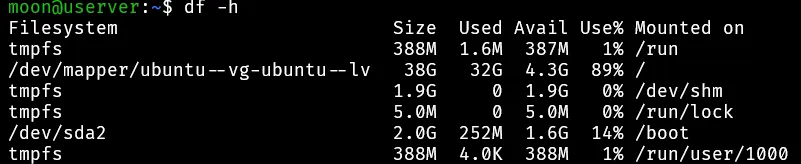
发现硬盘
- 目的：让操作系统知道有新硬盘，并在
/dev/下生成对应的设备节点，比如/dev/sda。 - 类比：就像你插了一块新 U 盘，电脑必须先“认出来”才行。
- 常用命令：
lsblk,fdisk -l,dmesg | tail
首先在 ubuntu 的属性中，将设备的硬盘调大。
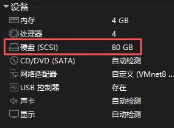
可能需要重启虚拟机才能在虚拟机中看到。
fdisk -l
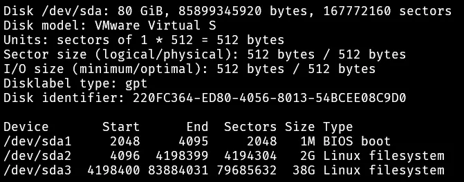
lsblk
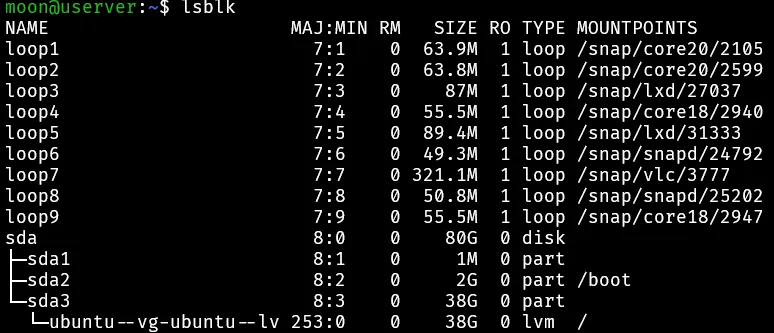
分区
- 目的：把一整块盘切成逻辑区域（分区），便于管理。
- 类比：就像一栋楼，你要先分“房间”（分区），然后才能给每个房间安排用途。
- 工具：
fdisk,parted,gdisk。 - 结果：会出现
/dev/sdb1,/dev/sdb2这样的设备。
- 首先确定对哪一块存储设备分区，
sda设备显然多出40GB的空闲磁盘。
1 | |
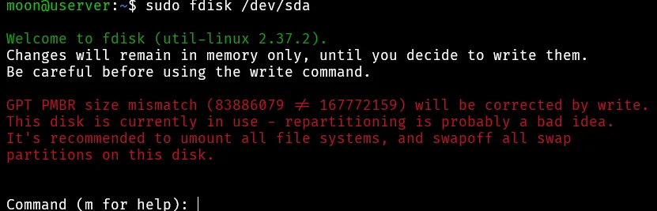
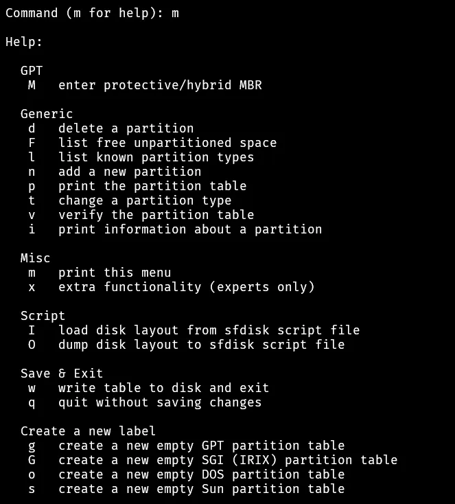
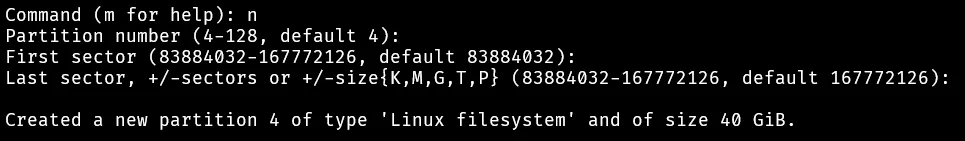
Partition number可以自己指定，就是分区完成后 sda1、sda2、sda3 中后边的数字。First sector / First sector是分区起始结束位置。回车默认使用空闲分区的全部。
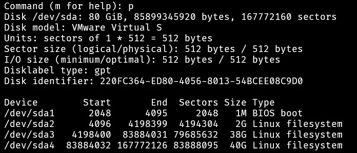
确认分区无误后就可以输入 w ，保存写入刚才的操作。如果之前的操作有误，可以输入 q 重新划分，之前的操作不会生效。
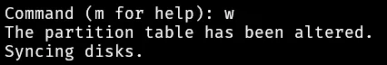
使用df -h发现磁盘的可使用空间没有变化，此时还不能使用这块新建的分区，还差最后一步建立文件系统。
卷管理 / RAID / 加密（可选层）
创建文件系统（格式化分区）
- 目的：在分区或逻辑卷上建立文件系统（ext4、xfs 等）。没有文件系统，数据无法被 OS 组织。
- 类比：房间有了，要装上“柜子”和“抽屉”来放东西（文件系统就是这些存储结构）。
- 命令：
mkfs.ext4 /dev/sdb1/mkfs.xfs /dev/sdb1
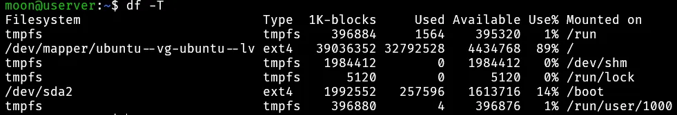
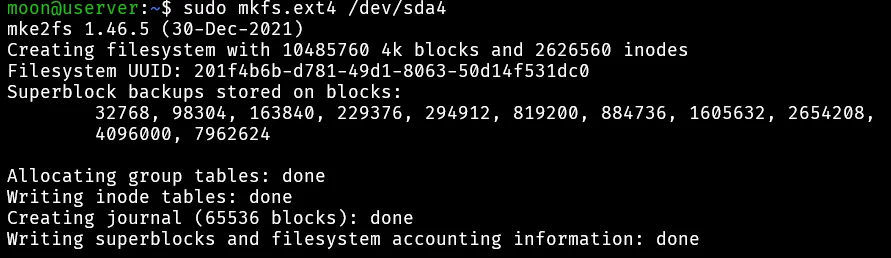
此时才能真正的存放文件。
挂载（mount）扩容根目录 5.6
- 目的：把文件系统挂到目录树（如
/data），这样用户才能通过路径访问。 - 类比：房间建好了，还得给它挂个门牌号（目录名），否则你找不到这个房间。
- 命令：
mkdir /data/mount /dev/sdb1 /data - 不挂载，文件系统只是存在但无法使用。
如果根目录
/已经有一个文件系统（通常是ext4或xfs），所以要扩容它，必须让这个文件系统所在的块设备“变大”。也就是说，新盘不能简单mount /dev/sdb1 /（这样会覆盖原/，系统直接挂掉）。正确做法是让新空间并入现有的根分区/逻辑卷，再扩展文件系统。
扩容（/）
场景 1（根目录不在 LVM 中，直接扩容）
如果你在 VMware 里给原根磁盘（如 /dev/sda）直接扩容：
- 在宿主机 (VMware) 增大虚拟磁盘大小。
- 在 Linux 内核里
echo 1 > /sys/class/block/sda/device/rescan或rescan-scsi-bus。 - 用
growpart /dev/sda 2（假设根分区是/dev/sda2）调整分区大小。 - 扩展文件系统：
resize2fs /dev/sda2（ext4）xfs_growfs /（xfs，参数必须是挂载点）。
这样根目录 / 会变大，不需要重新挂载。
场景 2（根目录在 LVM 中）
- 修改文件类型
使用 LVM 管理扩展逻辑卷，要修改上面创建分区时选择的类型，如下：
1 | |
- 把分区加入 LVM：
1 | |
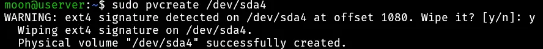
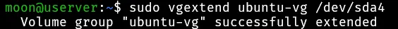
查看确认系统是否使用 LVM
lsblk -f， 可以看到每个分区的 FSTYPE，如果是LVM2_member，说明它属于 LVM；如果直接是ext4/xfs，说明就是普通分区文件系统。
sudo vgssudo lvssudo pvsvgs：列出现有卷组（VG）的名字。lvs：列出逻辑卷（LV），以及它挂在哪个 VG 上。pvs：列出物理卷（PV）对应的设备。
- 扩展根逻辑卷：
1 | |
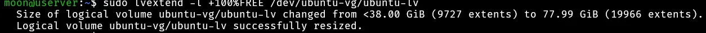
不同系统此处名称不同
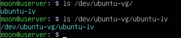
- 扩展文件系统：
1 | |
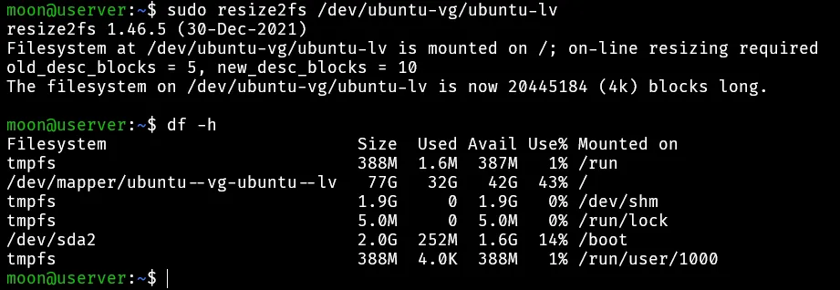
至此，扩容完毕，这是生产环境里最常用的方式：新盘不会单独挂载，而是通过 LVM 加入根卷组，根目录就透明地扩容了。